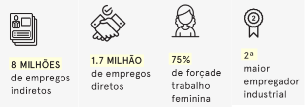
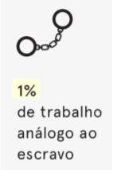

(01) A produção mundial de fibras vem crescendo ano a ano. Em 2018, por exemplo, foram produzidas
aproximadamente 107 milhões de toneladas de fibras. Mais de 30 milhões que em 2008.

Mantendo essa tendência, qual a estimativa do número de toneladas de fibras produzidas em 2030?
- 116
- 125
- 137
- 145

Fonte: Relatório Fios da Moda
(02) Em 2017, o Brasil foi o 10° maior produtor mundial de têxteis. Cerca de 15% da produção nacional provém de empresas
com pelo menos 30 empregados. Qual o percentual do faturamento total dessas empresas?
Mantendo essa tendência, qual a estimativa do número de toneladas de fibras produzidas em 2030?
- 72
- 56
- 88
- 20

Fonte: Relatório Fios da Moda
(03) A indústria têxtil no Brasil emprega 1.7 milhão de pessoas diretamente e 8 milhões indiretamente.

Qual o percentual desses empregados atuam em condições de trabalho análogas à escravidão?
- 1
- 3
- 5
- 10

Fonte: Relatório Fios da Moda